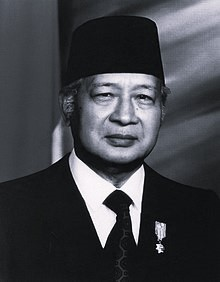

Demokrasi Terpimpin adalah sebuah sistem politik yang pertama kali diperkenalkan di Indonesia pada era pemerintahan Presiden Soekarno. Konsep demokrasi terpimpin didasarkan pada ideologi politik Soekarno yang dikenal sebagai “Pancasila”, yang merupakan dasar negara Indonesia.
Dalam demokrasi terpimpin, kekuasaan politik terpusat pada satu pemimpin atau kelompok kecil yang disebut “Dwi Tunggal”, yang terdiri dari Presiden dan Wakil Presiden. Pemimpin atau kelompok tersebut dianggap sebagai orang yang paling memahami kebutuhan dan aspirasi rakyat dan bertindak sebagai mediator atau penengah antara rakyat dan pemerintah.
Demokrasi terpimpin mengklaim menggabungkan nilai-nilai demokrasi dengan nilai-nilai sosialisme. Dalam prakteknya, demokrasi terpimpin memberikan kekuasaan yang signifikan kepada pemimpin dan partai politik yang dominan, dengan tujuan mencapai tujuan sosial dan ekonomi yang dianggap penting bagi masyarakat.

|
Masa Demokrasi Terpimpin terjadi saat Indonesia mengadopsi sistem pemerintahan yang memberikan keputusan sentral kepada kepala negara, yakni Soekarno. Periode ini dimulai sejak dikeluarkannya Dekrit Presiden pada 5 Juli 1959 dan berlangsung hingga tahun 1965. Sejak berakhirnya pemilihan umum pada tahun 1955, Soekarno menunjukkan ketidakpuasannya terhadap partai politik yang dinilainya terlalu berorientasi pada ideologi masing-masing dan kurang memperhatikan kepentingan nasional secara menyeluruh. Soekarno berpendapat bahwa demokrasi parlementer tidak sesuai dengan karakteristik bangsa Indonesia, yang didasari oleh semangat kekeluargaan dan gotong royong. Politik pada masa |
ini ditandai oleh ketegangan antara tiga kekuatan utama, yaitu Presiden Soekarno, Partai Komunis Indonesia, dan Angkatan Darat. Oleh karena itu, Masa Demokrasi Terpimpin merupakan periode di mana keputusan pemerintahan berpusat pada Soekarno. Kritik Soekarno terhadap partai politik mengindikasikan ketidakpuasannya terhadap orientasi ideologis dan kurangnya perhatian terhadap kepentingan nasional. Konsep demokrasi parlementer dinilai tidak sesuai dengan karakter bangsa Indonesia, yang menekankan semangat kekeluargaan dan gotong royong. Politik pada masa ini ditandai oleh ketegangan antara tiga kekuatan utama, menciptakan dinamika politik yang kompleks |
1. Mengaburnya Sistem Kepartaian
Pada masa demokrasi terpimpin, keberadaan partai-partai politik masa itu bertujuan untuk mempersiapkan diri dalam rangka mengisi jabatan politik. Akan tetapi, hal itu menjadi kekuatan penopang dari tiga kekuatan yang mendominasi masa itu yaitu lembaga kepresidenan, Angkatan Darat, dan Partai Komunis Indonesia (PKI).
2. Pembentukan Dewan Perwakilan Rakyat (DPR) Gotong Royong
Pembentukan lembaga legislatif dalam sistem politik nasional berubah menjadi lemah. DPR Gotong Royong jadi instrumen politik lembaga kepresidenan, namun proses rekrutmennya ditentukan sendiri oleh Presiden Soekarno.
3. Sangat Lemahnya Penegakkan Hak Dasar Manusia
Presiden kala itu punya kekuasaan yang sangat besar untuk bisa menyingkirkan lawan-lawan politik yang berbeda pandangan dengan Presiden. Beberapa lawan politik presiden Soekarno ditahan atau dipenjara karena menunjukkan pertentangan dengan beliau. Lawan politik presiden Soekarno kebanyakan berasal dari kalangan sosialis dan kalangan tokoh Islam di Indonesia. Misalnya: Buya Hamka, Tan Malaka, dan Sutan Syahrir.
4. Dikekangnya Kebebasan Pers
Pada masa demokrasi terpimpin, pers mengalami banyak pengekangan dan tidak memeroleh kebebasan. Beberapa surat kabar dan majalah diberangus pemerintah, contohnya Harian Abadi milik Masyumi dan Harian Pedoman dari PSI (Partai Sosialis Indonesia).
5. Pembatasan Otonomi Daerah
Sentralisasi kekuasaan pada pemerintah pusat menyebabkan adanya dominasi yang makin kentara dalam hubungan antara pemerintah pusat dan pemerintah daerah. Pada masa demokrasi terpimpin otonomisasi daerah-daerah menjadi lebih terbatas dan dikontrol ketat oleh pusat.
|
Pembentukan MPRS
Meskipun UUD 1945 menempatkan presiden di bawah MPR, kenyataannya MPRS tunduk kepada presiden. Ini terlihat dari tindakan presiden yang merangkap jabatan ketua MPRS dan pengangkatan wakil ketua MPRS dari partai besar serta wakil ABRI sebagai menteri tanpa memimpin departemen. |
Pembubaran DPR dan Pembentukan DPR GR
DPR GR kemudian tunduk pada kebijakan pemerintah karena pembentukannya bukan melalui pemilihan umum. Tindakan Presiden Soekarno ini bertentangan dengan UUD 1945, yang sebenarnya melarang presiden membubarkan DPR. |
Pembentukan DPAS
Seperti MPRS dan DPR GR, DPAS menempatkan dirinya di bawah pemerintah. Alasannya adalah DPAS yang mengusulkan agar pidato presiden pada 17 Agustus 1959, yang dikenal sebagai manifesto politik (manipol) Republik Indonesia, ditetapkan sebagai GBHN berdasarkan Penpres No. 1 Tahun 1960 dan Ketetapan MPRS No. 1/MPRS/1960. |
|
1. Soekarno
|
2. Soeharto  |
3. Adam Malik
|
← Kembali ke Demokrasi Parlementer Lanjut ke Demokrasi Pancasila →